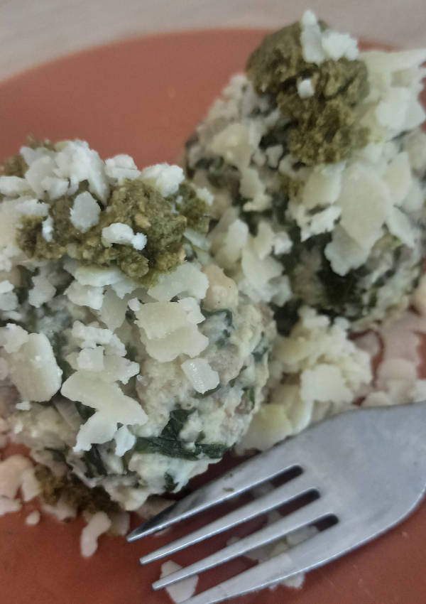

Bärlauchknödel
Quelle und weitere Informationen: https://github.com/OMerkel/recipes
Zum Rezepte-Index 🍲

Zutaten
-
400 g frischen Bärlauch
-
350 g alte Brötchen
-
1 Prise Salz
-
200 ml Milch
-
2 Stk mittelgroße Eier
-
1 Stk Zwiebel
-
2 EL Mehl
-
1 TL Butter
-
3 EL geriebener Parmesan
Zubereitung
-
Bärlauch fein schneiden.
-
Zwiebel klein würfeln und in Butter glasig braten.
-
Bärlauch zu den Zwiebeln hinzugeben und kurz anbraten.
-
Brötchen klein schneiden, bzw. würfeln.
-
Brötchenwürfel mit Eiern, Milch, Prise Salze, Bärlauch und Zwiebeln vermischen.
-
Knödelmasse mit Mehl weiter binden bis diese formbar wird. Gegebenenfalls etwas weiteres Mehl verwenden.
-
Mit feuchten Händen etwa 10 Knödel formen.
-
Die Knödel ca. 15 Minuten in siedendem Salzwasser ziehen lassen.
-
Abschließend mit geriebenen Parmesan bestreuen.
HINWEIS Die Knödel nicht in kochendes Wasser geben, da diese sonst leicht zerfallen könnten.